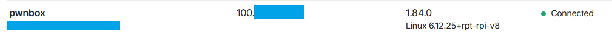

Building a RaspberryPi pwnbox with Tailscale
- published
Transform a RaspberryPi into a fully fledged pwnbox, with Wifi pentesting, internal / AD pentesting and remote access in mind.
Table of Contents
Hardware
I’m using :
- RaspberryPi: Raspberry Pi 4 Model B
- Antenna: Alfa AWUS036ACH
There exists a github project for compatible (plug and play) Raspberry Pi Wifi adapters here: https://github.com/morrownr/USB-WiFi/blob/main/home/The_Short_List.md
The AWUS036ACH is not on that list (installing drivers went fine, see below).
Wifi
We’ll be using the incredible EAPHammer toolkit and aircrack-ng for our Wifi pentesting needs.
Wlan0 setup (access point)
We’ll configure the builtin wlan interface on the Raspberry with Network Manager. You can configure it when flashing the OS to the SD card, but it will use wpa_supplicant, which might be easier to use instead of forcing the use of NetworkManager, but it seems to work sorta well, so we’ll keep NetworkManager for now.
We can either use nmtui (graphical interface) to configure an access point, or nmcli (cli) with this gist for the commands.
sudo nmcli con add type wifi ifname wlan0 con-name MGMT_AP autoconnect yes ssid MGMT_AP
sudo nmcli con modify MGMT_AP 802-11-wireless.mode ap 802-11-wireless.band bg ipv4.method shared
sudo nmcli con modify MGMT_AP wifi-sec.key-mgmt wpa-psk
sudo nmcli con modify MGMT_AP wifi-sec.psk "mypassword"
These commands create following configuration file:
# /etc/NetworkManager/system-connections/MGMT_AP.nmconnection
[connection]
id=MGMT_AP
uuid=********
type=wifi
interface-name=wlan0
timestamp=1750454070
read-only=true # added manually
wifi.powersave=0 # added manually
[wifi]
band=bg
mode=ap
ssid=MGMT_AP
[wifi-security]
key-mgmt=wpa-psk
psk=**********
[ipv4]
address1=10.123.123.1/25,10.123.123.1 # added manually
method=shared
[ipv6]
addr-gen-mode=default
method=ignore
One important thing to disable is the default dnsmasq service. NetworkManager comes with its own for some reason.
sudo systemctl stop dnsmasq
sudo systemctl disable dnsmasq
sudo systemctl restart NetworkManager
Installing Drivers
Since our OS is Raspberry Pi OS and not Kali, we don’t have the drivers that work out of the box for our Alpha antenna.
Installing them requires building them from source. I used the maintained version here https://github.com/lwfinger/rtw88. I’m currently using the rtw88 drivers installed manually with make, make install, etc….
Wlan1 Setup (pentesting)
Since we are using NetworkManager to manage our interfaces and we need to add a configuration file that prevents the service from managing the Alpha antenna, commonly named wlan1.
The aircrack-ng README references the NetworkManager.conf file, but we’ll its conf.d directory instead.
# /etc/NetworkManager/conf.d/10-unmanaged-wlan1.conf
[device-wlan1-unmanage]
match-device=interface-name:wlan1
managed=0
With this NetworkManager.conf file :
# /etc/NetworkManager/NetworkManager.conf
[main]
plugins=ifupdown
[ifupdown]
managed=false
[device]
wifi.scan-rand-mac-address=no
Finally, we should remove the wpa_supplicant service that still has a hand on the device with:
sudo systemctl stop wpa_supplicant@wlan1.service
sudo systemctl disable wpa_supplicant@wlan1.service
I have no idea if it’s necessary, but ChatGPT told me too and I, blindly trusting it’s output, ran the command. It did stop the issues I was having with the interface being brought back into monitor mode while eaphammer was running.
With this configuration, we are able to change wlan1 from managed mode to monitor mode, run airodump-ng, eaphammer and other wifi tools, but we keep the option to enable NetworkManager’s control of wlan1 to connect (client mode) to other wifi networks if needed.
Connecting to another wifi network with wlan1 (after setting managed=1 and restarting NetworkManager)
sudo nmcli device wifi connect ssid password "password" ifname wlan1
Here are a few commands that I found useful.
$ iw wlan1 info # shows if the interface is in monitor or managed mode
Interface wlan1
ifindex 4
wdev 0x200000001
addr 8c:59:c3:d0:37:d2
type monitor
# change the type for the interface (note: airodump-ng does that automatically, and eaphammer needs the interface to be in managed mode first)
$ sudo ip link set wlan1 down
$ sudo iw dev wlan1 set type managed
$ sudo ip link set wlan1 up
Internal
We’ll be using the excellent Exegol project for our internal pentesting needs. Exegol’s documentation is available here.
I’m assuming that you know how to read documentation to install it.
We are building our own Exegol image to add extra tools. There is a setup.sh script that is executed when a container is launched, but I prefer to have my tools built into the image directly.
After installing Exegol, inside the /home/fudge/.exegol/exegol-images, add a custom.dockerfile file. This is the same format as the other dockerfiles, except we are pulling the free image, and adding our own packages on top of it.
ARG AD_IMAGE_REGISTRY="nwodtuhs/exegol"
ARG AD_IMAGE_NAME="free"
FROM ${AD_IMAGE_REGISTRY}:${AD_IMAGE_NAME}
ARG TAG="local"
ARG VERSION="local"
ARG BUILD_DATE="n/a"
LABEL org.exegol.tag="${TAG}"
LABEL org.exegol.version="${VERSION}"
LABEL org.exegol.build_date="${BUILD_DATE}"
LABEL org.exegol.app="Exegol"
LABEL org.exegol.src_repository="https://github.com/ThePorgs/Exegol-images"
COPY sources /root/sources/
WORKDIR /root/sources/install
RUN echo "${TAG}-${VERSION}" > /opt/.exegol_version
RUN chmod +x entrypoint.sh
RUN ./entrypoint.sh package_custom # important bit
RUN ./entrypoint.sh post_build
WORKDIR /workspace
ENTRYPOINT ["/.exegol/entrypoint.sh"]
The package_custom script can be added in the ~/.exegol/exegol-images/sources/install/ directory. It should look like this :
#!/bin/bash
# Author: Fudgedotdotdot
source common.sh
function install_custom() {
[STUFF HERE]
}
function package_custom() {
set_env
local start_time
local end_time
start_time=$(date +%s)
install_custom
post_install
end_time=$(date +%s)
local elapsed_time=$((end_time - start_time))
colorecho "Package custom completed in $elapsed_time seconds."
}
I sure you don’t need to follow this exact format, but I’ll let you try it out yourself.
Building the image is simple, from the exegol-images directory, run the following command and choose custom.
$ exegol build custom --build-path . --build-log log.txt
🐶 Build profiles
┌───────────────┐
│ full │
│ custom │
│ light │
│ ad │
│ osint │
│ web │
└───────────────┘
[?] Select a build profile (full): custom
Once the image is built, the custom image is shown as Local image.
$ exegol info
🛸 Available images
┌─────────┬──────────┬───────────────────────┐
│ Image │ Size │ Status │
├─────────┼──────────┼───────────────────────┤
│ custom │ 47.9 GB │ Local image │
│ free │ 47.8 GB │ Up to date (v.3.1.6) │
│ ad │ 27.51 GB │ Pro / Enterprise only │
│ full │ 39.1 GB │ Pro / Enterprise only │
│ light │ 13.93 GB │ Pro / Enterprise only │
│ web │ 16.68 GB │ Pro / Enterprise only │
│ osint │ 9.79 GB │ Pro / Enterprise only │
│ nightly │ 39.74 GB │ Pro / Enterprise only │
└─────────┴──────────┴───────────────────────┘
The image can be started with exegol start <name> custom.
TailScale
We can setup Tailscale for remote access in case we’re not in Wifi range. This is stupid simple to install, follow the guide here and you’re up and running a few seconds.
Tailscale offers device code authentication aswell, so no need for a desktop environment, we can authenticate to our tailnet with a headless RaspberryPi using sudo tailscale up and visiting the link printed to the console.
Then, we can get tailscale’s status which shows the other devices in the network:
fudge@pwnbox:~ $ sudo tailscale status
100.xx.xx.xx pwnbox fudge@ linux -
100.xx.xx.xx multivac fudge@ windows -
100.xx.xx.xx raspb fudge@ linux -
We can also see the device as connected in the admin console

Finally connect from a seperate wifi network on multivac to the tailscale IP for pwnbox to end this article.
PS ❯ ssh fudge@100.xx.xx.xx
Linux pwnbox 6.12.25+rpt-rpi-v8 #1 SMP PREEMPT Debian 1:6.12.25-1+rpt1 (2025-04-30) aarch64
The programs included with the Debian GNU/Linux system are free software;
the exact distribution terms for each program are described in the
individual files in /usr/share/doc/*/copyright.
Debian GNU/Linux comes with ABSOLUTELY NO WARRANTY, to the extent
permitted by applicable law.
fudge@pwnbos:~ $
Thanks for reading,
Fudge…